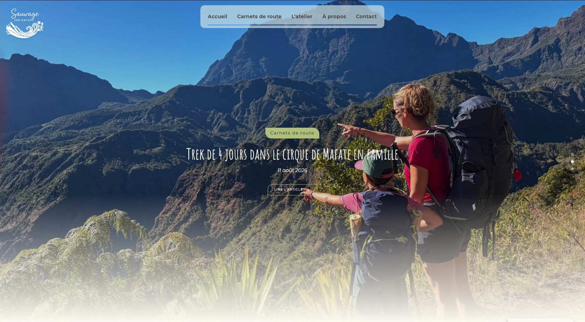
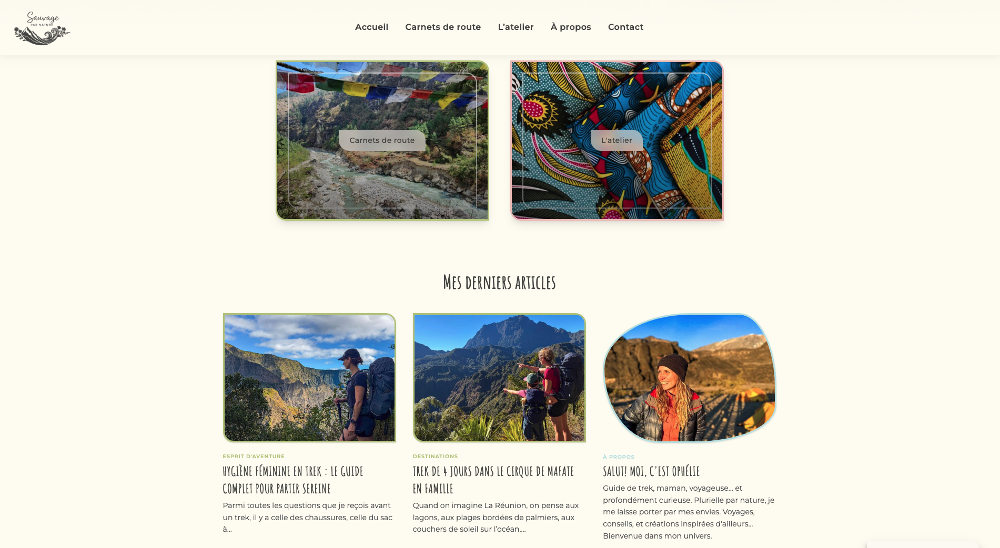
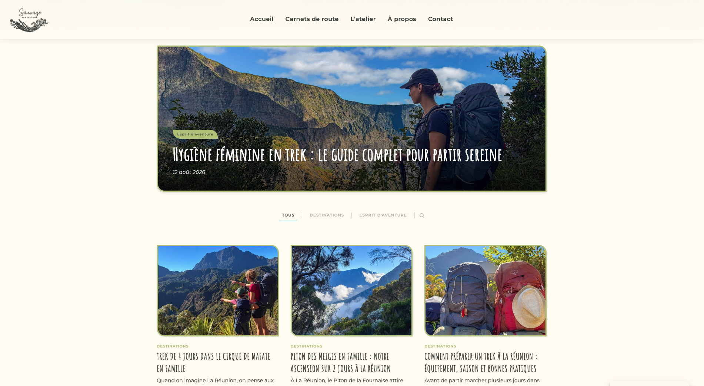
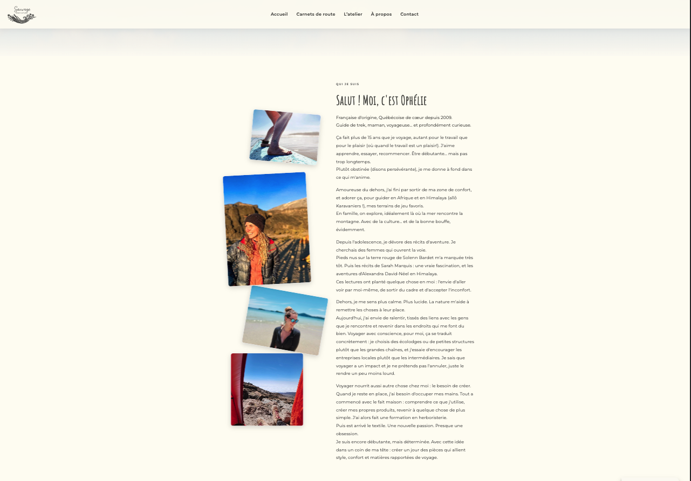
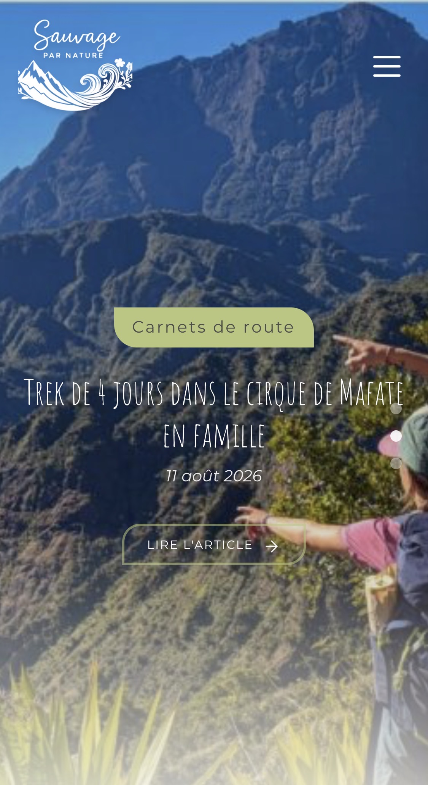
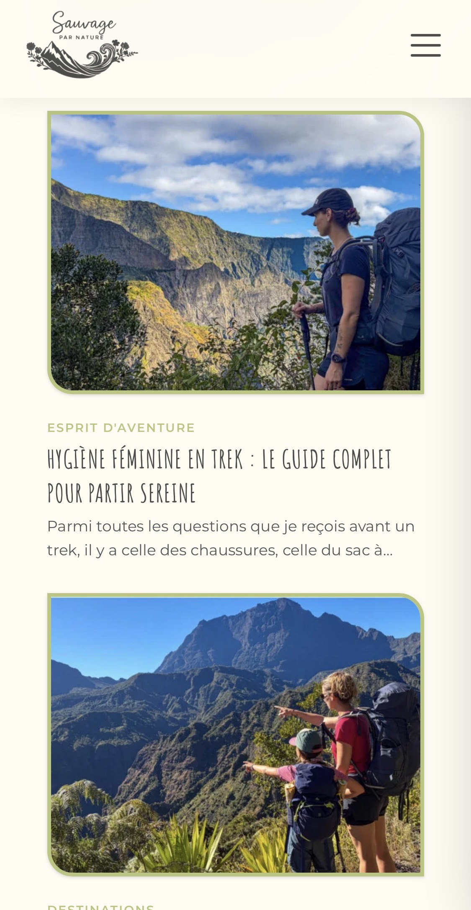
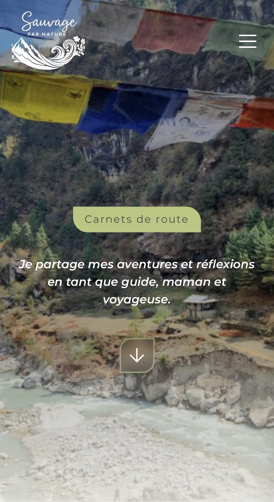
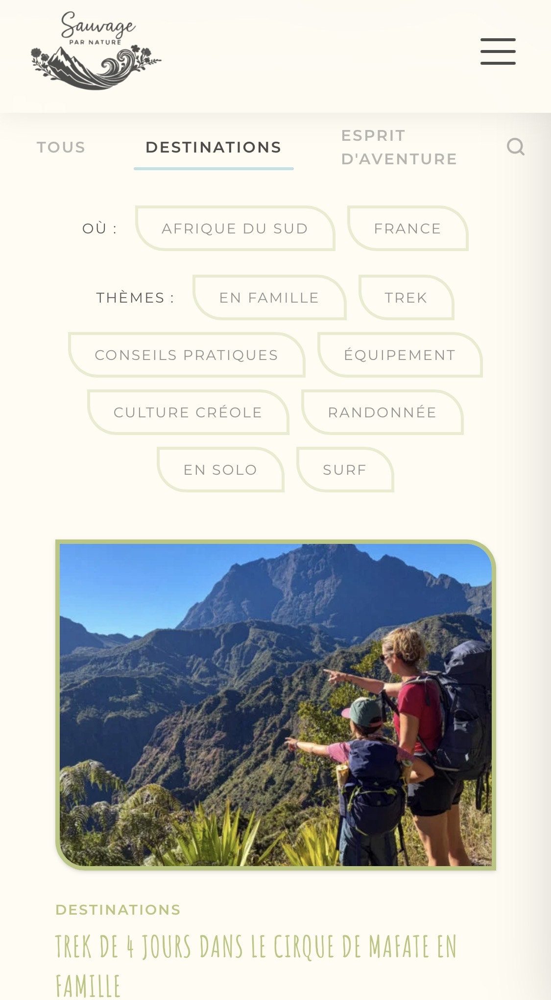
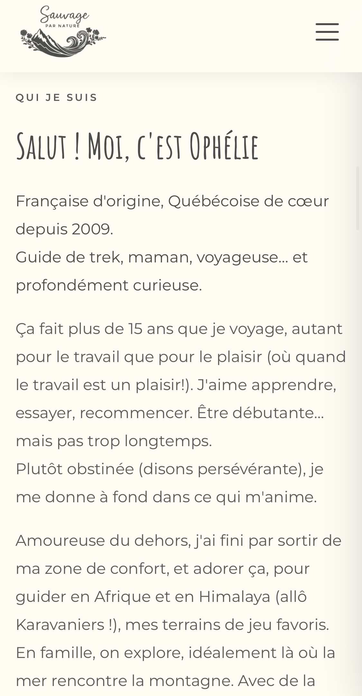

Sauvage par Nature
A custom WordPress theme built from scratch for a French-language travel and
sewing blog, reaching a francophone audience across Quebec, France, and beyond.
Designed for a non-technical content creator, with performance, security,
and dual-jurisdiction privacy compliance handled entirely behind the scenes.
Features
- Custom PHP theme with Tailwind CSS v4, built for a non-technical editor
- Automated WebP/AVIF pipeline plus a custom helper for CSS-embedded images
- Dual compliance: GDPR (France) and Quebec's Bill 25, via Complianz
- Cookieless, self-hosted Matomo, exempt from CNIL consent requirements
- Hardened admin: relocated backend, custom login, 2FA, Cloudflare Turnstile
- A+ security headers via a custom mu-plugin and Cloudflare managed transforms
Technical Stack
- Frontend: Custom PHP theme, Tailwind CSS v4 (Vite), vanilla JS
- CMS: WordPress, Gutenberg, ACF, Rank Math SEO
- Hosting/CDN: Hostinger (LiteSpeed) behind Cloudflare
- Caching & Images: LiteSpeed Cache + QUIC.cloud (WebP/AVIF, srcset)
- Security: Kadence Security, custom mu-plugins, 2FA, Turnstile
- Privacy: Complianz (GDPR + Quebec Bill 25), self-hosted Matomo
Desktop View




The Challenge
Sauvage par Nature is built for a real, non-technical client, who writes and publishes every article herself through the Gutenberg editor. The core challenge was keeping that editorial experience completely simple while the underlying architecture quietly handled performance, security, and legal compliance across two jurisdictions.
Mobile performance was a major focus at launch: raising the mobile PageSpeed score without
degrading an already strong desktop score. This meant configuring LiteSpeed Cache's WebP/AVIF
conversion for standard image tags, then writing a custom spn_webp_url() PHP helper
for the images LiteSpeed's HTML-attribute rewriting can't reach, like backgrounds set through
PHP-echoed inline <style> blocks. Thumbnail regeneration for the new responsive
image sizes also had to be scripted as a WP-CLI loop by post ID to avoid an out-of-memory kill
on shared hosting.
Because the blog's audience spans France and Quebec, privacy compliance had to satisfy both GDPR and Quebec's Bill 25 at once. That meant configuring self-hosted Matomo analytics to run cookieless and exempt from CNIL consent requirements, and verifying that Hostinger's Standard Contractual Clauses adequately cover international data transfers.
Admin security required its own set of workarounds: a custom login flow using a cookie-based fallback, since a custom query parameter doesn't survive a standard form POST; Cloudflare Turnstile added through a lightweight dedicated plugin, since Kadence Security's own Turnstile integration is Pro-only; and IP detection deliberately set to read Cloudflare's proxy header, to avoid the security plugin mistakenly banning Cloudflare's own IP addresses.
Architecture
The theme follows a modular structure: source CSS is split into focused partials (components, typography, gallery, utilities) built with Tailwind CSS v4 through Vite, and reusable template parts (like article cards) keep the same markup consistent across the homepage, category archives, and related-post sections. Category hero text is pulled dynamically from ACF fields rather than hardcoded, keeping templates content-agnostic for a non-technical editor.
Because Tailwind v4 can't scan database content, classes introduced through the Gutenberg block editor are manually safelisted, so the compiled CSS always covers what the editor produces without extra build steps. Infrastructure-sensitive code, like security headers, is deployed as a must-use plugin directly on the server, intentionally kept outside the theme's version control.
Responsive Design
The blog adapts from desktop to mobile with optimized image loading and a layout tuned for a >90 mobile PageSpeed target




